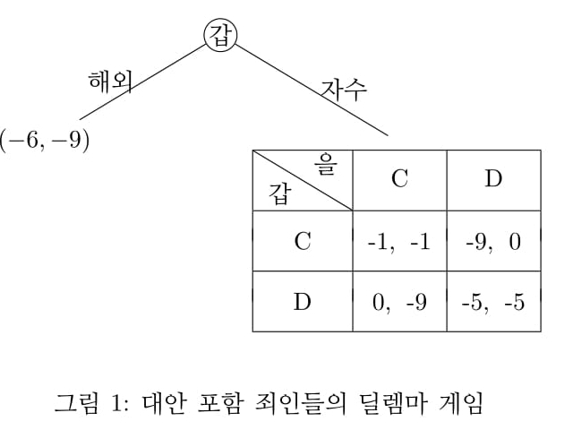
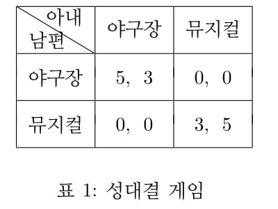
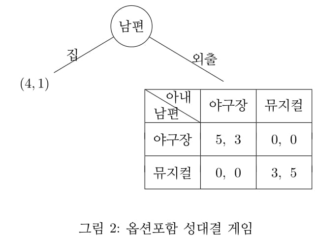

1. 선택안이 있는 죄인들의 딜렘마게임
죄인들의 딜렘마 게임의 확장판을 고려하자. 범죄자 갑은 죄를 짓고 해외로 도
피를 고려 중이다. 검찰은 그가 자수하기를 요구하지만 귀국하면 국내에 이미 검
거되 있는 공범 을과 함께 심문을 받는다. 즉 죄를 자복하는 것과 부인하는 것
간에 죄인들의 딜렘마 상황에 놓이는 것이다. 갑은 향수병이 강해 해외체류시 -6
의 효용을 얻는다고 하자. 갑의 최선의 선택은 무엇인가?.

<그림1>에서 보듯이 죄인들의 딜렘마 게임이 하나의 부분게임임을 알 수 있
다.1
부분게임 완전균형을 구하기 위해 역방향추론법을 적용한다. 갑은 자수시
죄인들의 딜렘마 상황이 전개될 것으로 예상할 것이다. 이때 갑, 을이 모두 죄를
부인하는 것이 부분게임에서 내쉬균형이므로 (-5,-5)를 얻을 것으로 기대된다.
한편 갑은 해외체류시 -6의 효용을 얻으므로 부분게임값의 -5와 비교하여 갑은
자수하는 것이 더 낫다. 따라서 갑은 자수하고 자백, 을도 자백하는 전략을 선택
하는 것이 부분게임 완전균형이다. 만약 갑이 해외체류하는 것을 그다지 꺼리지
않아 갑의 효용이 -5보다 크다면 그는 자수하지 않고 해외로 밀항할 것이다.
2. 성대결게임
다음은 성대결 게임(battle of sex)이라 하는 유명한 게임이다. 휴일을 맞이하여
남편과 아내는 외출하여 야구장 또는 뮤지컬을 관람하려 한다. 그런데 남편은 야구장을 좀 더 선호하고 아내는 뮤지컬을 좀 더 선호한다. 게임의 효용은 이하 <표 1>과
같다.

이 정태적 게임에서 내쉬균형은 두 개 이다. 남편과 아내가 함께 야구장을 가거나, 둘이 함께 뮤지컬을 관람하는 것이다. 두개의 균형 중 어느 것이 선택될지
는 알 수 없다. 이와 같은 상황에서 남편이 자기가 좋아하는 야구장이 선택되도
록 하는 방법이 있을까?
3. 선택안이 있는 성대결 게임
그런데 남편은 외출을 좋아하지 않을 수도 있으므로 이제 조건을 추가하여 남편
이 집에 머물러 있는 옵션을 추가한다. 아내는 휴일에 집에 있는 것을 별로 좋아
하지 않으므로 집에 있는 경우 남편과 아내의 효용은 (4, 1)이라 하자.

역방향 추론법을 적용하여 균형을 구해보자. 남편은 외출 선택시 부분게임에
서 내쉬균형인 (야구장, 야구장) 또는 (뮤지컬, 뮤지컬)로 결론날 것으로 예상한
다. 이제 전체 게임을 고려하자. 전자의 부분게임 균형이 실현된다면 남편은 집
4, 외출 5의 효용을 비교해서 외출을 선택하고 야구장을 선택한다. 후자의 부분
게임 균형이 실현된다면 남편은 집 4, 뮤지컬 3을 비교해서 집을 있는 선택을 하
게 된다. 이 경우 부분게임 완전균형은 다음 두 가지다.
i) 남편 외출 선택, 남편, 부인 모두 야구장 선택, 효용값 (5, 3)
ii) 남편 집 선택, 부인 무대응, 효용값 (4, 1)
다른 방법으로 첫 단계부터 추론해 보자.
남편은 두 가지 선택지가 있다. 방콕 혹은 외출.
i) 남편이 방콕을 선택하는 경우 : 남편의 효용은 4.
ii) 남편이 외출을 선택하는 경우 :
부분게임을 잘 보면 남편이 뮤지컬을 선택할 일은 전혀 없다. 남편이 뮤지컬 선
택시, 아내가 야구장을 선택하면 남편은 0의 효용을, 아내가 뮤지컬을 선택하면
남편은 3의 효용을 얻는다. 어느 경우도 남편이 집에 있을 경우 효용 4 보다 작기
때문이다. 즉 남편은 외출 선택시에는 야구장을 선택하여 5의 효용을 기대한다.
이제 다음 단계에서 아내의 합리적 추론은 무엇일까?
남편이 외출을 선택한다면 아내는 외출시 남편이 무조건 야구장을 선택할 것임을 예상할 수 있고 그렇다면 집에 있을 경우 아내의 효용 1과 외출하여 야구장
선택시 아내의 효용 3을 비교하여 아내도 야구장을 선택한다. 이 경우 남편 야구장, 아내 야구장이 최종 선택되고 효용 (5, 3)을 얻는다.
이와 같이 앞에서 부터 상황을 추론하는 방법을 순방향추론법 (forward induction)이라 한다. 2
결과적으로 두 가지 추론방법에서 같은 결과가 나오는 것은 (5, 3) 균형 뿐이
다. 이 균형이 (4, 1) 균형보다 안정적인 균형이라 할 수 있을 것이다.
이와 비슷한 예는 현실에서 많이 볼 수 있다. 여당과 야당은 두 안건 A, B
심의를 놓고 격돌하고 있다. 단 여당은 A안을, 야당은 B안을 더 선호한다. 양당이 협치를 해서 (A, A) 또는 (B, B)로 같은 법안을 선택하는 것이 부분게임에서
내쉬균형이다. 즉 두 개의 내쉬균형이 존재한다. 야당은 자기의 주장이 관철되도
록 하기 위해 국회를 보이콧하는 옵션을 검토하고 있다. 여당이 국회 파행보다
야당의 요구를 들어주는 것이 낫다고 판단한다면 야당이 주장하는대로 (B, B)를
선택할 것이다. 그러나 양당이 자신의 주장을 굽히지 않는다면 국회는 파행되고
양당은 끊임없는 평행선을 걷게될 것이다.
애인 사이인 남녀가 중국집에서 짜장면 혹은 짬뽕을 먹으려고 하는데 남자는
짜장면을 선호하고 여자는 짬뽕을 선호한다. 둘은 하나를 사서 사이좋게 나눠먹
으려 하고 있다. 이 상황에서 남자가 자기가 먹고 싶은 것을 시키려면 어떻게 해
야할까? 남자가 중국집 입구에서 은근 슬적 사실 나는 보신탕을 더 좋이하는데
라고 말한다. 여자는 보신탕을 극히 싫어하므로 차라리 짜장면을 선택할 것이다.
사슴사냥게임을 생각해 보자. 이는 갑과 을이 협동하여 사슴을 사냥하든가, 아니면 각자 토끼를 사냥하는 것이 내쉬균형이다.
이 때 갑이 토끼를 사냥할 바에야 나는 바에서 술이나 먹겠다고 한다면 술을 좋아하지 않는 을이 봤을 때 갑의 요구대로 사슴사냥에 주력하려는 유인이 있다.
매번 약속시간보다 늦게 오는 친구에게 그럴 바에는 약속을 취소하겠다고 한다면 그 친구는 약속시간을 지키려고 할 것이다.
이와같이 게임적 상황에 새로운 선택지를 추가함으로써 나에게 유리한 결과
가 실현되도록 할 수 있다. 갑은 을과 협상시 협상외 다른 대안이 있다는 것을
암시함으로써 자신에게 유리한 방향으로 협상의 결론을 유도할 수 있다. 갑에게 다른 대안이 있다는 사실이 을의 결정에 제약을 줄 것이다.
1. 정확히는 모든 그림을 트리형으로 그려야 하겠지만 이해의 편의상 트리와 표를 혼합해서 그리는 경우가 많다.
2. 순방향추론법에 대해서는 다음 문헌 참조
P. T. Y. MAN, FORWARD INDUCTION EQUILIBRIUM , 2009
S.GOVINDAN AND R. WILSON, ON FORWARD INDUCTION , 2006